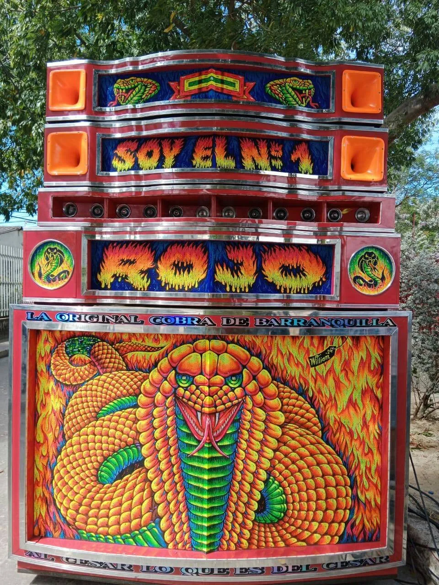
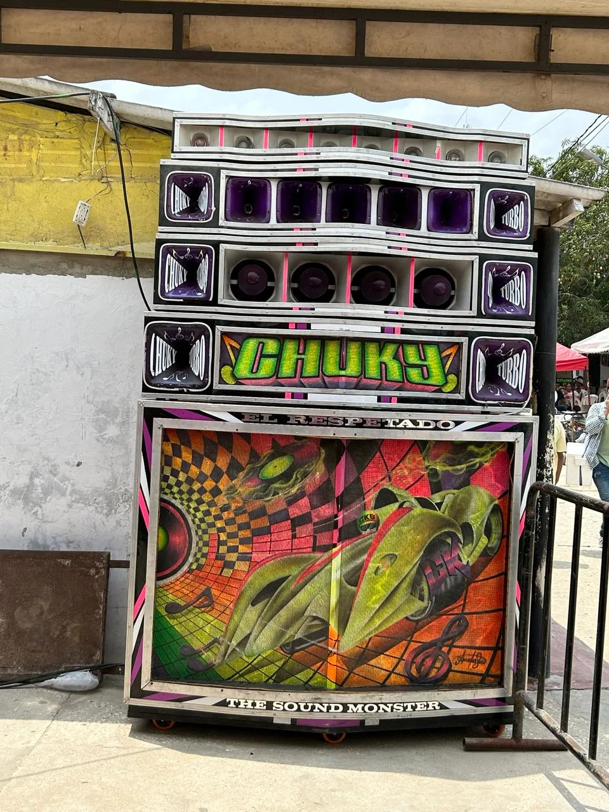

El Rojo tiene una cobra en el frente. Su cuerpo ocupa el paño principal, debajo del nombre y de varias bocas de parlante. En la fotografía tomada en Barranquilla en 2024, la máquina se presenta antes de emitir un sonido: letras, marcos y animal distribuyen la atención sobre una estructura vertical. Un picó puede escucharse a distancia, pero también necesita una cara que permita reconocerlo entre otros.
En El Chuky, fotografiado ese mismo año, cambia la relación entre imagen y equipo. Las aberturas superiores permanecen expuestas y el motivo principal queda concentrado en la zona inferior. Ambos frentes permiten estudiar un problema compartido: cómo introducir una imagen contundente sin hacer desaparecer la condición técnica del objeto. El pintor trabaja con un soporte que ya tiene divisiones, huecos y proporciones.
El nombre del equipo y el del autor de su pintura no circulan siempre con la misma facilidad. Populardelujo documentó en 2013 el trabajo de William Gutiérrez y explicó que El Gran Willy era un picó que había decorado en 1986. Parte de las imágenes reunidas provenía del archivo del pintor y de Africolombia, el proyecto de Fabián Altahona. Detrás de una historia sonora había también personas conservando fotografías. [1]


Esa documentación permite corregir una forma habitual de mirar la gráfica popular: atribuir sus decisiones a una ciudad entera y dejar sin nombre a quien las realiza. Aquí hay encargos, trayectorias y trabajos diferenciados. Las fotografías de El Rojo y El Chuky no acreditan que Gutiérrez los pintara; sirven para observar otros frentes de la cultura picotera. La comparación gana precisión cuando no fuerza una autoría común.
La escala modifica el dibujo. El nombre necesita una silueta reconocible; el motivo puede sostener una lectura más cercana. Si todos los contornos exigieran la misma atención, la superficie perdería jerarquía. La cobra de El Rojo organiza el centro y los marcos contienen la escena. El exceso aparente no elimina el orden: obliga a encontrarlo dentro de una acumulación de signos.
También importa que el soporte sea una máquina. Una abertura no se desplaza con la libertad de una letra sobre papel. El diseño tiene que responder a superficies disponibles y a encuentros entre piezas. La imagen puede dar continuidad visual al conjunto sin que todas sus partes sean materialmente continuas. Esta es una destreza distinta de trasladar una ilustración terminada a cualquier objeto.
En septiembre de 2025, la Bienal de Bogotá programó con Populardelujo y la Universidad de los Andes un taller de gráfica picotera con Gutiérrez. La ficha relacionaba pintura, música y elaboración de un motivo propio. Ese antecedente importa como forma de transmisión: el saber podía presentarse mediante decisiones de trabajo y no solo mediante la exhibición de una obra acabada. No se anuncia aquí como una actividad vigente. [2]


El Ministerio de Cultura catalogó en 2014 Picó, la máquina musical del Caribe, un proyecto multimedia realizado por Roberto De Zubiría, Sergio Zaraza y Santiago Arreaza. La ficha lo sitúa en Barranquilla y describe una plataforma participativa. Es una pista para seguir la investigación y sus archivos, no una prueba de que todos sus servicios continúen funcionando. [3]
Para entender un frente de picó hay que seguir un encargo: quién lo pide, cómo se nombra la máquina, qué superficie llega al taller y qué cambia al pintarla. Ahí aparece un criterio de trabajo que la fotografía no alcanza a registrar: qué considera logrado el pintor y qué necesita reconocer quien opera el equipo.
El aporte de los picós al diseño no está en copiar una paleta o un animal. Está en coordinar identidad, soporte técnico y vida pública. La imagen espectacular no basta: el parlante tiene una función, el frente distribuye una lectura y la pintura tiene una mano que merece crédito.
Fuentes.
- Populardelujo — El Gran Willy, 15.10.2013
- Bienal Internacional de Arte y Ciudad de Bogotá — Gráfica Picotera I: William Gutiérrez, programa de septiembre de 2025
- Ministerio de Cultura — Picó, la máquina musical del Caribe: ficha de la producción de 2014
Ensayo documental, sin entrevista ni escucha de campo. No se atribuyen los dos picós fotografiados a William Gutiérrez: las imágenes y el caso del pintor tienen procedencias diferentes.
Fuentes consultadas el 15.11.2026. Análisis e interpretación: RUMMOR. Edición privada para revisión.